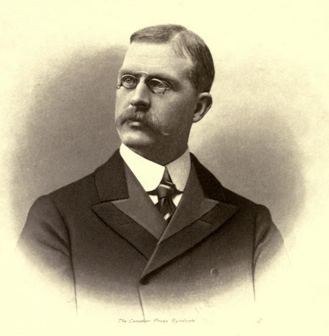

Joseph B. Tyrell
The Albertosaurus’ remains were first ever discovered by a 25 year old man named, Joseph B. Tyrrell. On June 9th of 1884, he was actually on an expedition on the search of coal in the Horseshoe Canyon Formation of the Red Deer River in Canada.